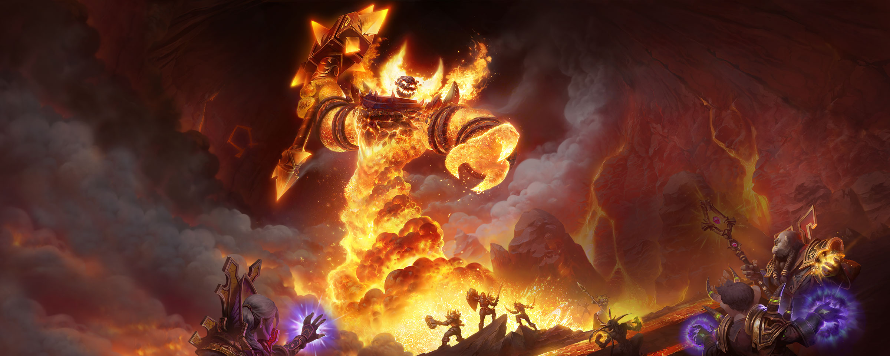
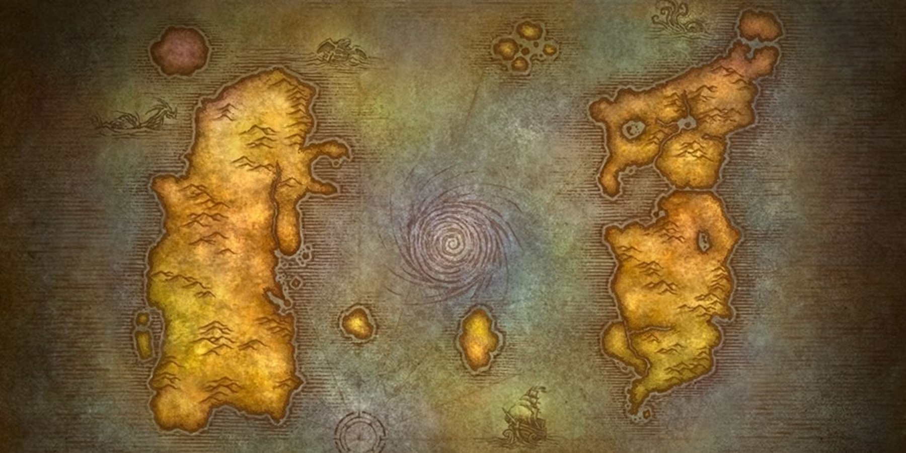

Welcome to Azeroth, Adventurer!
Step through the Dark Portal of nostalgia and return to the era that forged countless legends. Classic World of Warcraft rekindles the thrill of venturing into a vast, dangerous world where every level feels earned, every dungeon demands teamwork, and every victory leaves a lasting memory. Whether you’re reliving the glory days or experiencing the original game for the first time, this site is here to guide you on your journey.
Our mission is to be your companion as you explore the world of Classic WoW. We’ve gathered essential information about the game’s mechanics, its iconic classes, and its unique talent systems to help you build a hero worthy of Azeroth. From the bustling streets of Stormwind to the eerie wilds of the Barrens, you’ll find tips, lore, and insights to make your adventures richer and more rewarding.
Here you can dive into detailed class overviews, compare talent builds, and discover strategies tailored for both new players and veterans returning to their roots. We also feature updates and resources to keep you informed about events, community happenings, and helpful tools for your journeys. Think of this website as your inn between quests — a place to prepare, plan, and meet fellow travelers.
So sharpen your sword, ready your spells, and step forward. The world of Classic Warcraft awaits, and your adventure begins here.

Classic World at a Glance
Step into Azeroth as it once was, a world full of mystery, danger, and adventure at every turn. From the frozen peaks of Dun Morogh to the scorching deserts of Tanaris, every zone tells a story, brimming with quests, hidden treasures, and challenges to test your courage. Horde or Alliance, your journey will shape your experience, as every choice matters and every encounter leaves its mark.
In Classic World of Warcraft, the journey itself is as thrilling as the destination. Leveling is an adventure, not a chore: you’ll travel on foot across vast lands, discover hidden caves, and meet fellow adventurers on the same path. Without modern conveniences, every victory feels earned, and every upgrade carries the weight of accomplishment.
Your choice of class defines your role in this world. Will you wield the raw power of a Warrior, master the stealth of a Rogue, or heal your allies as a Priest? With nine original classes and talent trees to customize your playstyle, each character becomes uniquely yours, allowing you to craft the hero you’ve always imagined.
Allegiance to the Horde or the Alliance shapes your story further. Cities, allies, and enemies differ with every faction, and conflict is constant, whether on battlegrounds or in contested zones. The rivalry is as legendary as the lands themselves, giving every adventure a sense of stakes and consequence.
This is the world of Classic WoW: vast, immersive, and waiting for you to explore. Whether you are revisiting old memories or discovering it for the first time, your journey through Azeroth promises excitement, challenge, and moments you’ll never forget.

Stay Up to Date in Azeroth
Classic World of Warcraft is ever-changing, even in its nostalgic form. From patch notes and bug fixes to community events and seasonal adventures, there’s always something happening in Azeroth. Keep your hero prepared by staying informed about the latest developments, strategies, and updates.
Patch Notes - Version 1.15.5 - November 19, 2024:
- New WoW Classic Anniversary realms will go live on November 21 at 2:00 p.m. PST. The Molten Core and Onxyia raids will open on December 12. To support group play, Anniversary realms include a Looking for Group (LFG) tool, which will allow players to create, join, and browse parties manually.
- Anniversary realms feature a Services chat channel that players can enable, specifically for advertising services such as portals, summons, and tribute buffs. All such advertising must be posted to the Services channel, and player chat of these kinds placed elsewhere are subject to player reports and actions taken by Blizzard.
- Mail between characters on the same account is instant.
- The buff/debuff limit is removed.
- Dual Spec availability will be added soon. This will not available immediately after the launch of Anniversary realms.
- Players can now toggle between the old Guild UI and the new one as an interface option. (Under Interface -> Classic Guild UI)